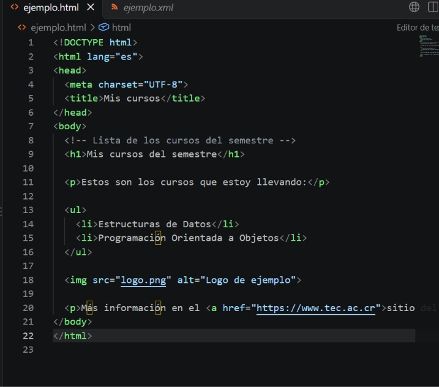
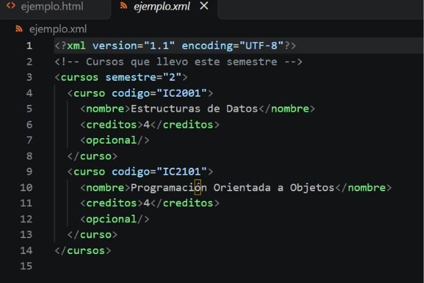

Tarea TO03 - Estructuras de Datos (IC2001) - TEC
Soy Emanuel y estudio Ingeniería en Computación en el TEC. Hasta ahora he programado en Java, C++ y Python.
Cuando termine la carrera quiero trabajar en desarrollo de software.
Me gusta convivir con mis amigos, familia, jugar juegos competitivos y siempre destacar.
XML significa Extensible Markup Language. Es un lenguaje para guardar datos usando etiquetas, y es una versión más limitada de SGML, un lenguaje de marcado que ya existía. (XML 1.1, sección 1 Introduction)
Una de sus metas es que sea fácil hacer programas que lo lean y que los documentos se entiendan con solo verlos. (XML 1.1, sección 1.1 Origin and Goals)
HTML es el lenguaje de las páginas web. Su estándar se llama HTML Living Standard. Tiene su propia sintaxis y también una sintaxis XML. (HTML Living Standard, sección 1.8 HTML vs XML syntax)
Un documento XML está bien formado cuando cumple las reglas de la especificación. Si no las cumple es un error fatal y el programa que lo lee no puede seguir. (XML 1.1, sección 2.1 Well-Formed XML Documents)
<br/>.(XML 1.1, sección 3.1 Start-Tags, End-Tags, and Empty-Element Tags)
Es como los paréntesis de una operación. Si abro dos y cierro uno, no se puede resolver.
Puede empezar con un prólogo, donde va la declaración XML (por ejemplo la versión). (XML 1.1, sección 2.8 Prolog and Document Type Declaration)
Después va el elemento raíz. Los elementos tienen etiqueta de inicio y de cierre, y los atributos van dentro de la de inicio. (XML 1.1, sección 3.1 Start-Tags, End-Tags, and Empty-Element Tags)
También se pueden poner comentarios. (XML 1.1, sección 2.5 Comments)
Lo primero es el DOCTYPE, que se escribe <!DOCTYPE html>. Da igual si va en mayúscula o minúscula. (HTML Living Standard, sección 13.1.1 The DOCTYPE)
Después van los elementos, dentro de html. Normalmente es un head y un body. Cada elemento tiene etiqueta de inicio, contenido y etiqueta de cierre, y puede tener atributos. (HTML Living Standard, sección 13.1.2 Elements)
| Etiqueta | Para qué sirve | Sección |
|---|---|---|
| <html> | Es la raíz de todo el documento | 4.1.1 The html element |
| <head> | Información de la página (título, estilos) | 4.2.1 The head element |
| <title> | El título de la pestaña | 4.2.2 The title element |
| <body> | Lo que se ve en la página | 4.3.1 The body element |
| <h1> a <h6> | Títulos | 4.3 Sections |
| <p> | Un párrafo | 4.4.1 The p element |
| <ul> <ol> <li> | Listas | 4.4 Grouping content |
| <div> | Una caja para agrupar cosas | 4.4 Grouping content |
| <a> | Un enlace | 4.5.1 The a element |
| <img> | Una imagen (no lleva cierre) | 4.8 Embedded content |
(XML 1.1, sección 3.1; HTML Living Standard, secciones 13.1.2 Elements y 13.1.6 Comments)
| XML | HTML | |
|---|---|---|
| Para qué sirve | Guardar datos con etiquetas que uno inventa | Hacer páginas web con etiquetas que ya define el estándar |
| Etiquetas de cierre | Siempre hacen falta | Algunas se pueden omitir y otras (como img) no llevan |
| Si hay un error | Es error fatal y se detiene | Tiene reglas propias para leer el documento |
| Primera línea | Declaración XML (opcional) | DOCTYPE |
(XML 1.1, secciones 2.1 y 2.8; HTML Living Standard, secciones 13.1.1 The DOCTYPE, 13.1.2 Elements y 13.1.2.4 Optional tags)
Figura 1. ejemplo.html

Figura 2. ejemplo.xml
